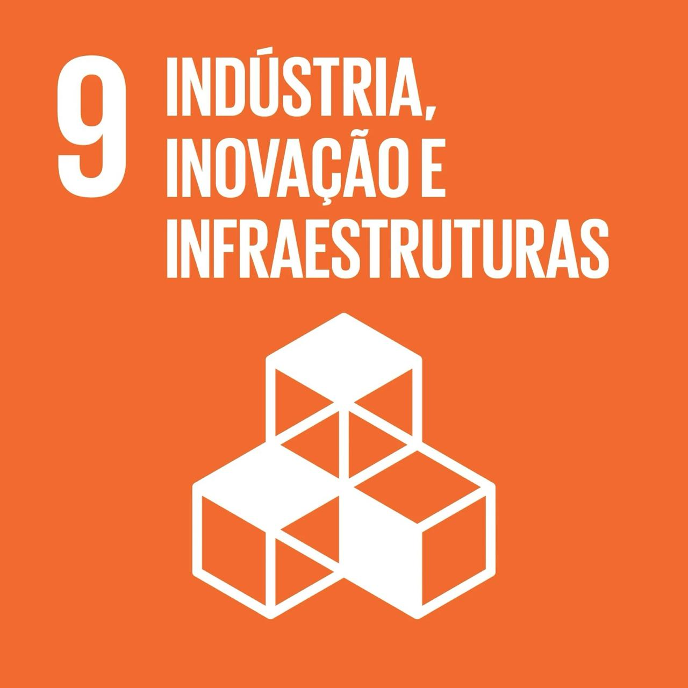

Construir infraestruturas resilientes e fomentar a inovação.
A ODS 9 (Objetivo de Desenvolvimento Sustentável 9) busca construir infraestruturas resilientes, promover a industrialização inclusiva e sustentável e fomentar a inovação.
O principal desafio do ODS 9 é promover o desenvolvimento de uma infraestrutura moderna, acessível e sustentável que atenda às necessidades da população e impulsione a economia. Em muitos países, especialmente os em desenvolvimento, ainda faltam estradas, transporte eficiente, acesso à internet e suporte à inovação tecnológica.